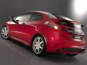
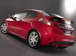

El Civic tiene un equipamiento de serie completo, todos tienen control de estabilidad. El equipamiento opcional que se monta en fábrica es muy reducido; sólo hay opción de navegador,asientos con calefacción y tapicería de peil para la versión Executive, no para las otras dos, sport y comfort. La pintura metalizada es una opción para todas las versiones. Hay otros elementos de equipamiento que se pueden montar en el concesionario, como distintos equipos de música, de ruedas y elementos diferenciandores de la carrocería.

El Civic se caracteriza porque es más bien duro (y algo seco) de suspensión. Al menos con los neumáticos 225/45 R17 es un coche estable y con buen tacto. EL motor Diesel es más satisfactorio por prestaciones y respuesta que el 1.8 de 140 CV y puede ser más silencioso a alta velocidad. En el Civic, las prestaciones y el consumo según datos de las marca son muy buenos; no hay ninguno que gaste menos y es de los mejores en prestaciones.
Precio: 18.000 Euros

 

Página oficial de Honda: www.nuevohondacivic.com